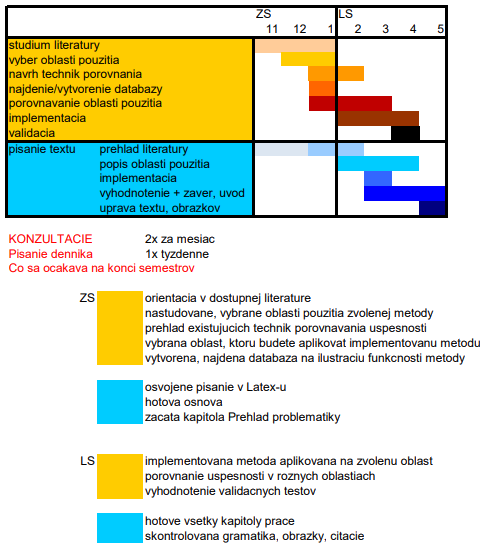

O bakalárskej práci
Anotácia
- Prehľad metód pre efektívnu detekciu stlačených kláves pri hre na klavíri v kombinácií s použitím rôznych existujúcich a dostupných technológií.
- Analýza možností detekcie v reálnom čase.
- Rozpoznanie tónov hry na základe detekcie stlačených kláves.
- Export rozpoznaných tónov do štandardizovaných formátov MIDI/ MusicXML.
Cieľ
Cieľom mojej bakalárskej práce je vytvorenie softvéru pre detekciu stlačených kláves pri hre na klavíri pomocou počitačového videnia a export rozpoznaných tónov do štandardizovaných formátov MIDI/ MusicXML.
Školiteľ práce
RNDr. Paula Štancelová
Časový plán práce.
Denník
Týždeň 17.02.2020 - 23.02.2020:
- Spracovanie pripomienok k východiskovej kapitole
- Spracovanie pripomienok k prototypu
Týždeň 24.02.2020 - 01.03.2020:
- Vylepšenie zobrazovanie jednotlivých snímok v aplikácii
- Tvorba filtra pre odstraňovanie rúk zo snímok
- Naprogramovanie rozpoznávania čiernych kláves
Týždeň 02.03.2020 - 08.03.2020:
- Naprogramovanie detekcie rozloženia čiernych kláves
- Namapovanie jednotlivých čiernych kláves na jednotlivé tóny
- Tvorba algoritmu na rozpoznávanie stlačenia čiernych kláves
- Inštalácia knižnice MIDIUtil 1.2.1 na tvorbu MIDI súborov
Týždeň 09.03.2020 - 15.03.2020:
- Naprogramovanie rozpoznávania čiernych kláves
- Naprogramovanie exportu stlačených kláves do MIDI/MusicXML pomocou niznic MIDIUtil a Music21
- Začiatok písania textu kapitol Návrh a Implementácia
Týždeň 16.03.2020 - 22.03.2020:
- Naprogramovanie detekcie rozloženia blielych kláves
- Tvorba algoritmu na minimalizovanie detekcie falošných pustení kláves
- Veľká refaktorizácia kódu
Týždeň 23.03.2020 - 29.03.2020:
Zdroje:
Mccaffrey, R. (2017). Piano Music Transcription Based on Computer Vision by University of Dublin , Trinity College. (May).(dizertacka)
Akbari, M., & Cheng, H. (2015). Real-Time Piano Music Transcription Based on Computer Vision. IEEE Transactions on Multimedia, 17(12), 2113–2121.
Suteparuk, P. (2013). Detection of Piano Keys Pressed in Video. 2006.
Kang, S., Kim, J., & Yoon, S. (2019). Virtual Piano using Computer Vision. 1–10. Retrieved from
Goodwin, A., & Green, R. (2013). Key detection for a virtual piano teacher. International Conference Image and Vision Computing New Zealand, 282–287.
Wan, Y., Wang, X., Zhou, R., & Yan, Y. (2015). Automatic piano music transcription using audio-visual features. Chinese Journal of Electronics, 24(3), 596–603.
Gorodnichy, D. O., & Yogeswaran, A. (2006). Detection and tracking of pianist hands and fingers. Third Canadian Conference on Computer and Robot Vision, CRV 2006, 2006.
Oka, A., & Hashimoto, M. (2013). Marker-less piano fingering recognition using sequential depth images. FCV 2013 - Proceedings of the 19th Korea-Japan Joint Workshop on Frontiers of Computer Vision, 4, 1–4.
Vishal, B., & Lawrence, K. D. (2018). Paper piano-Shadow analysis based touch interaction. Proceedings - 2017 2nd International Conference on Man and Machine Interfacing, MAMI 2017, 2018-March, 1–6.
Rahman, M. M., Hossain, A. B. M. A., Rana, M. M., & Mitobe, K. (2013). Hand motion capture system in piano playing. 2013 International Conference on Informatics, Electronics and Vision, ICIEV 2013.
Begum, H., Shaheen, S., Moetesum, M., & Siddiqi, I. (2018). Digital beethoven - An android based virtual piano. Proceedings - 2017 13th International Conference on Emerging Technologies, ICET2017, 2018-Janua, 1–5.
Lee, J., Doosti, B., Gu, Y., Cartledge, D., Crandall, D. J., & Raphael, C. (2019). Observing pianist accuracy and form with computer vision. Proceedings - 2019 IEEE Winter Conference on Applications of Computer Vision, WACV 2019, 1505–1513.
Risuda, R. B. (2014). Transcription of Piano Music. 331–336.(bakalarka z fiit)
Hadjakos, A., & Lefebvre-Albaret, F. (2009). Three methods for pianist hand assignment. Proceedings of the 6th Sound and Music Computing Conference, SMC 2009, 321–326.
dokumentacia k OpenCV
E. Šikudová, Z. Černeková, W. Benešová, Z. Haladová, and J. Kučerová, Počítačové videnie Detekcia a rozpoznávanie objektov. Praha: Wikina Praha, 2013, p. 397.